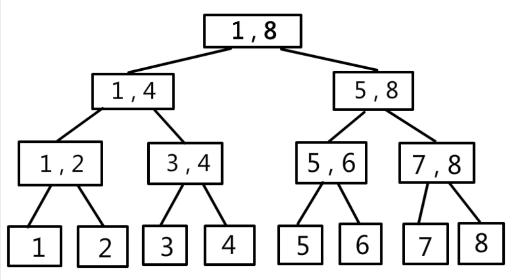
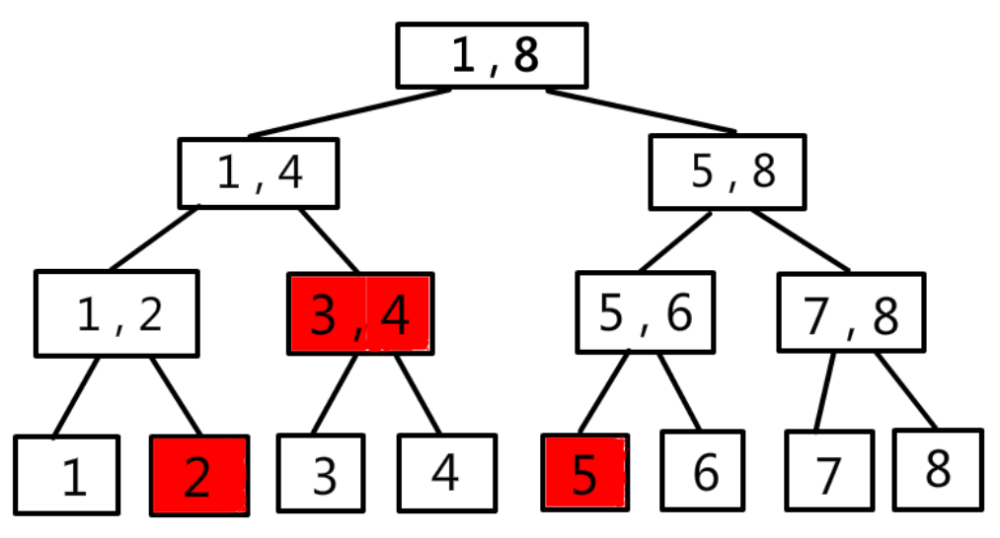
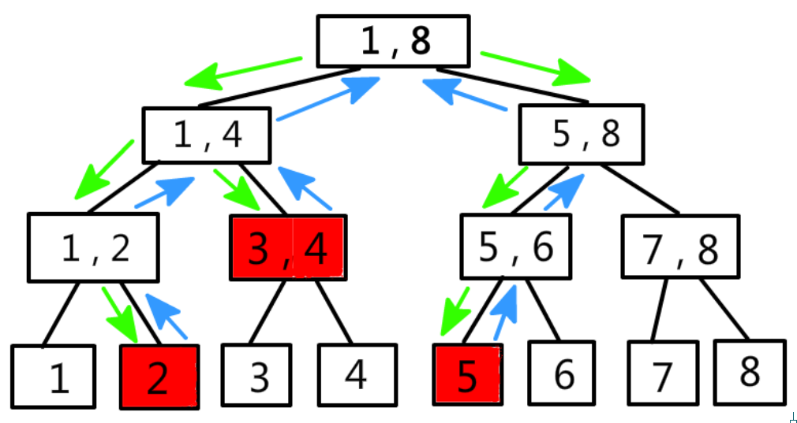
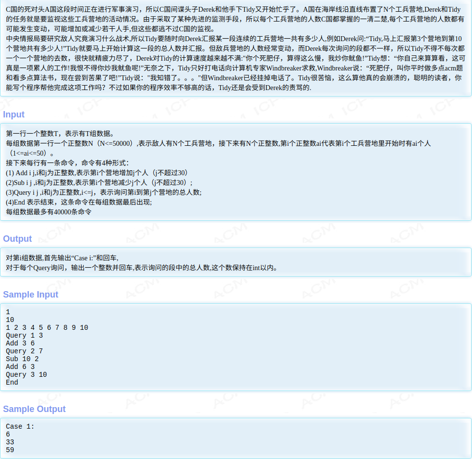
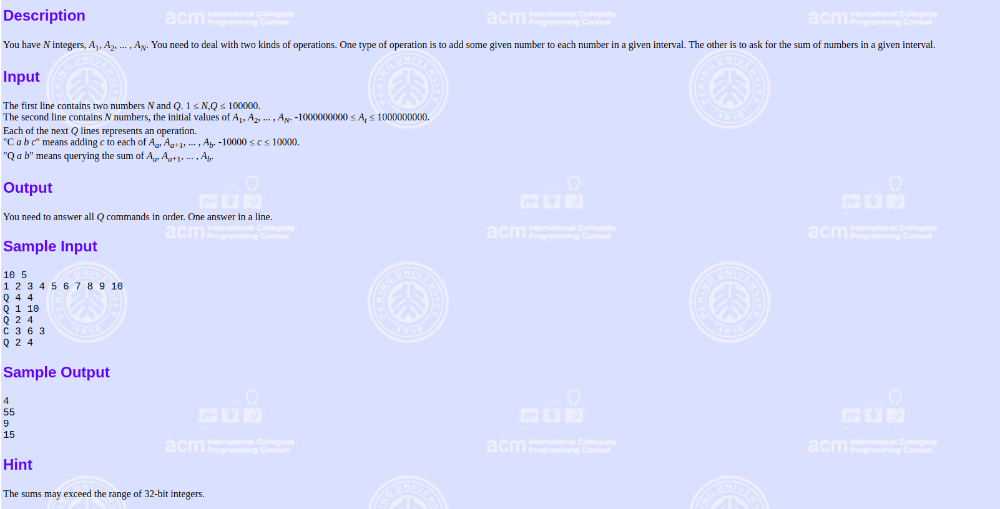
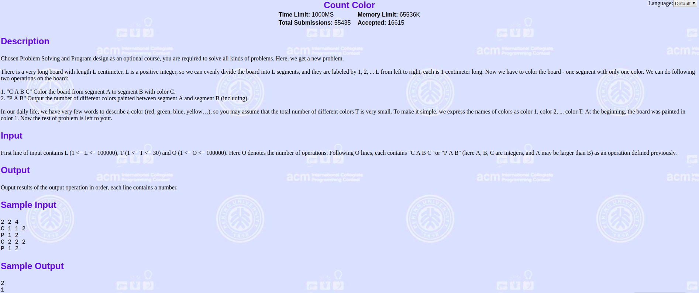

最近几天都在瞎搞线段树，学会了如何轻松愉快的写线段树模板题，于是想写一个线段树入门的总结。如果你是像上海全能王csl一样会ac自动机fail树上dfs序建可持久化线段树的神犇，那么你可以无视这一篇没什么用的blog了。
引子
考虑这样一个问题：有一个50000大的数组，然后有50000个询问，每个询问让你求区间l到r的和。这个问题好像没什么难度，用一个循环将每次询问的区间求和输出就好，比如下面这样。1
2
3
4
5
6
7
8
9
10
11
12
13
14
15
16
17
18
19
20
21
22
using namespace std;
typedef long long ll;
int num[50005];
int main()
{
int n,q;
cin>>n>>q;
for(int i=1;i<=n;++i)
cin>>num[i];
for(int i=1;i<=q;++i)
{
int x,y;
cin>>x>>y;
ll ans = 0;
for(int j=x;j<=y;++j)
ans += num[j];
cout<<ans<<endl;
}
return 0;
}
这样暴力求解实在是太慢了，有一种更快的方式是前缀和，如下。1
2
3
4
5
6
7
8
9
10
11
12
13
14
15
16
17
18
19
20
21
22
23
using namespace std;
typedef long long ll;
ll num[50005];
int main()
{
int n,q;
cin>>n>>q;
num[0] = 0;
for(int i=1;i<=n;++i)
{
cin>>num[i];
num[i] += num[i-1];
}
for(int j=1;j<=q;j++)
{
int x,y;
cin>>x>>y;
cout<<num[y]-num[x-1]<<endl;
}
return 0;
}
如果将问题改为这样：有一个长度的50000的数组，有50000次操作，操作分为两种，第一种操作是将第i个数加上一个值x，另一种操作是询问区间l到r的和。对于这个问题，暴力和前缀和都不那么好使了。线段树有一个弟弟叫树状数组，能够解决这一个问题，树状数组能够解决的问题一定能够用线段树解决。树状数组较为简单，核心代码也就十行左右，但是本篇blog不打算讲树状数组。
再将问题改一改，同样那么大的数组，那么多次的询问，询问区间l到r的最大值是多少？暴力会TLE，前缀和搞不定，树状数组也不行，这时候线段树就应运而生了。
线段树
线段树是一种树型的数据结构，主要用于维护一段连续区间的某种性质，并支持对连续区间进行一些操作。每一次操作的时间复杂度都为logn级别。大概分为四种类型：
单点修改，单点查询
单点修改，区间查询
区间修改，单点查询
区间修改，区间查询
线段树的模样
说那么多也没用，还不如看看线段树长什么样子。

这是一个[1, 8]区间的线段树，每一个结点代表一个线段，结点存的值为区间的某种特性，比如区间和、区间最大值、区间最小值等，根据实际情况不同而不同。
查询区间[2, 5]如下图所示

只需要访问代表[2]、[3, 4]、[5]这三个区间的结点就可以了。
修改区间[2, 5]的过程如下图所示(单点修改为区间修改的特殊情况)，递归向下(PushDown)修改，同时递归向上(PushUp)维护父结点。

其实修改和查询的操作有点类似。
线段树的表示形式
线段树的表示形式有很多种，有用结构体的、数组等等。这一篇blog用数组来表示线段树，其实都大同小异，没有太大的区别。
为什么能够用数组来表示线段树呢？线段树是一颗二叉树,所以能够用1～n来标记结点，对于序号为p的结点，它的左孩子序号为2p，右孩子序号为2p+1。
在使用线段树的时候，需要开辟4倍的空间，比如要为长度为8的线段构建一颗线段树，那么数组大小至少要为32才行。
假设N为2^n，则最后一个结点的编号F(N)=2^(n+1)-1
若N为2^(n+1),则F(N)=2^(n+2)-1
所以对于2^n <= N <= 2^(n+1)，2^(n+1)-1 <= F(N) <= 2^(n+2)
所以要开4倍空间
1 | tepydef long long ll; |
在讲解线段树的时候，我用维护区间和作为例子。
建树
在具体展示线段树的代码前，先简单介绍几个位运算的操作。
若当前结点为p，那么它的左孩子就为2p，右孩子就为2p+1，对于乘2，可以用左移一位表示，即2p和p<<1相等，那么2p+1就和p<<1|1(先将p左移一位，即乘二，然后在二进制中，偶数的最低位为0，这时候再或上一个1，最低位就变成1，相当于加一操作)相等。
线段树的建树过程是用递归二分的方式，具体代码如下:1
2
3
4
5
6
7
8
9
10
11
12
13
14
15
16
17//p:当前结点序号, 当前的区间范围是[l, r]
void build(int p, int l, int r)
{
if(l==r)//表示走到叶子节点，将当前序号为p的结点赋值为数组中第l个值，然后return结束递归
{
tree[p] = num[l];
return ;
}
int mid = (l+r) >> 1;//取区间中点，然后二分建树
build(p<<1, l, mid);
build(p<<1|1, mid+1, r);
//PushUp操作，因为用区间和为例，所以当前结点的值就为左右孩子的和
tree[p] = tree[p<<1] + tree[p<<1|1];
}
//根节点序号为1，线段树的区间为[1, n]
build(1, 1, n);
单点修改
以将某个节点加上某个数值为例
1 | //p:当前结点序号，当前区间范围是[l, r]，修改的结点位置是原始数组的ind位置，将ind这个结点加上v这个值 |
区间查询一
查询某段区间的和
1 | //p:当前结点序号，当前结点表示的区间为[l, r]，要查询[x, y]的区间和 |
单点修改，区间查询例题
其实线段树模板的代码挺好理解的，我也加了详细的注释，新手理解起来应该问题不大，下面通过一道例题来展示线段树的使用。

题目的大意就是有N个工兵营地，然后营地会增加或删减掉一些兵，会询问营地i到j的总人数。
AC代码如下1
2
3
4
5
6
7
8
9
10
11
12
13
14
15
16
17
18
19
20
21
22
23
24
25
26
27
28
29
30
31
32
33
34
35
36
37
38
39
40
41
42
43
44
45
46
47
48
49
50
51
52
53
54
55
56
57
58
59
60
61
62
63
64
65
66
67
68
69
70
71
72
73
74
75
76
77
78
79
80
81
82
83
84
85
86
87
88
89
90
91
92
93
94
using namespace std;
typedef long long ll;
int num[50005];
ll tree[4 * 50000 + 5];
void build(int p, int l, int r)
{
if(l == r)
{
tree[p] = num[l];
return ;
}
else
{
int mid = (r+l) >> 1;
build(p<<1, l, mid);
build(p<<1|1, mid+1, r);
tree[p] = tree[p<<1] + tree[p<<1|1];
}
}
void add(int p, int l, int r, int ind, int v)
{
if(l == r)
{
tree[p] += v;
return ;
}
else
{
int mid = (r+l) >> 1;
if(ind <= mid) add(p<<1, l, mid, ind, v);
else add(p<<1|1, mid+1, r, ind, v);
tree[p] = tree[p<<1] + tree[p<<1|1];
}
}
ll query(int p, int l, int r, int x, int y)
{
if(x <= l && r <= y)
{
return tree[p];
}
else
{
int mid = (l+r) >> 1;
ll ans = 0;
if(x <= mid)
ans += query(p<<1, l, mid, x, y);
if(mid < y)
ans += query(p<<1|1, mid+1, r, x, y);
return ans;
}
}
int main()
{
int t;
scanf("%d", &t);
for(int i=1;i<=t;i++)
{
int n;
scanf("%d", &n);
for(int j=1;j<=n;j++)
scanf("%d", &num[j]);
build(1, 1, n);
string s;
printf("Case %d:\n", i);
while(cin>>s && s[0] != 'E')
{
if(s[0] == 'Q')
{
int x, y;
scanf("%d%d", &x, &y);
printf("%lld\n", query(1, 1, n, x, y));
}
else if(s[0] == 'A')
{
int x, y;
scanf("%d%d", &x, &y);
add(1, 1, n, x, y);
}
else
{
int x, y;
scanf("%d%d", &x, &y);
add(1, 1, n, x, -y);
}
}
}
return 0;
}
代码应该不难理解，和上面介绍的模板都差不多，这就是最简单的线段树模板题了，基本的使用方法类似。
Lazy思想
刚刚介绍的只是简单的单点修改，其实区间修改差别也不大，对于区间修改常常会用到Lazy思想。例如[1, 8]区间的值都加上5，那么只需要将表示区间[1, 8]的Lazy标记加上5，并更新表示区间[1, 8]结点的值即可，即加5操作不继续向下传递，只有当需要用到的时候才继续向下传递。比如当前区间[1, 8]的Lazy标记为5，当我们需要查询区间[5, 8]的和时，才将[1, 8]的Lazy标记向下传递到表示区间[5, 8]的结点，同时将[1, 8]的Lazy标记改为0。
Lazy就如它的名字一样，懒狗一条，只有需要的时候才向下传递，这样就可以节省时间了。如果没有Lazy，每次区间更新都对区间的每个节点进行更新，那么岂不是慢死了，和暴力差不多了，TLE警告！
那么如何利用Lazy的思想呢？其实只需要加一个Lazy数组就好，在更新和查询的时候修改一点代码即可，同时还多了一个PushDown的操作。1
2
3
4
5
6
7
8
9
10
11
12
13
14
15
16
17
18
19
20
21
22
23
24//Lazy数组的如下
int lazy[4*maxn+5];
//PushDown操作，就是操作Lazy值
//p:当前结点的序号，表示区间[l, r]
void pushdown(int p, int l, int r)
{
//当lazy[p]不为0时
if(lazy[p])
{
//因为要向左右孩子传递，所以取个中值
int mid = (l+r) >> 1;
//更新左孩子的Lazy结点值
lazy[p<<1] += lazy[p];
//更新右孩子的Lazy结点值
lazy[p<<1|1] += lazy[p];
//更新左孩子的区间和，左孩子的区间值的个数为mid-l+1,和就多了lazy[p] * (mid-l+1)
tree[p<<1] += lazy[p] * (mid-l+1);
//更新右孩子的区间和，同理左孩子
tree[p<<1|1] += lazy[p] * (r-mid);
//将p的Lazy标记清0
lazy[p] = 0;
}
}
下面就介绍一下使用Lazy思想的区间更新和区间查询代码，同样以求区间和为例
区间更新
1 | //p:当前结点序号，表示的区间为[l ,r]，要更新的区间为[x, y]，将每个结点加上v |
区间查询二
1 | void query(int p, int l, int r, int x, int y) |
区间更新例题

题意就是对某个区间加或减一个值，然后询问某个区间的区间和。
AC代码如下：
1 |
|
Easy！
染色问题
线段树还有一类经典的问题就是对区间染色，然后问你某区间有多少种颜色这样的题目。对于染色问题，一般的套路如下，若某个区间完全被一种颜色覆盖，那么tree[p]的值就为表示这种颜色的数字，若这个区间有多种颜色，则用-1表示。
poj2777

题目的意思简洁明了，是最简单的染色问题，解法就是用-1表示杂色区间，纯色区间用颜色的数字表示。在计算时，用一个颜色种类大小的bool数组标记是否计算过该种颜色就可以了。该问题并不难解决，如果理解了上面所讲的线段树内容，这一题是可以自己想到方法AC的。具体的代码就不贴了，网上也有很多题解。
推荐
其实线段树并不难理解，想到如何维护需要的东西才是难的地方，如果你看了这一篇blog还是懵懵懂懂的话，可以看一下下面的这个线段树入门视频，个人觉得讲得还不错。
如果你理解了线段树的基本思想，想要找一些水题爽一爽，那么下面的题目应该是能够满足你。
hdu1754
hdu1698
hdu1540
poj2528
hdu1610
结尾
部分代码(例题代码除外的其余所有代码)是裸敲的，没有编译和调试，如有错误请评论指出。
有什么不懂得也可以评论交流。
END！